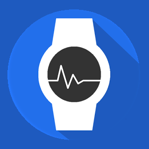
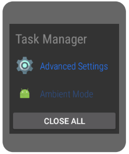

Taski - zabij je wszystkie
Mój zegarek ma lepsze parametry, niż mój pierwszy pecet, serio. W związku z tym trzeba go traktować troche jak komputer. Często może się zdażyć, że pootwieramy za dużo aplikacji i zaczyna nam zegarek "zamulać". I w tym momencie do gry wchodzi Task Manager
 Dlaczego warto zainstalować Task Manager?
Bo jest potrzebny i superłatwy w użyciu. Wybierasz zadanie do zamknięcia i w nie klikasz lub korzystasz z magicznego przycisku, który zamknie wszystkie taski i z niego najczęściej korzystamJednym zdaniem:
Musisz mieć tą aplikację, jesli zegarek zaczyna Ci się wieszać
Pobierz z Google Play

Opublikowano: 24.03.2017r. Wszystkie materiały pochodzą ze strony developera